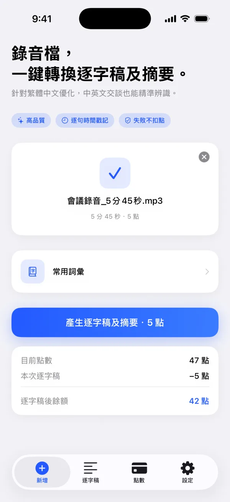
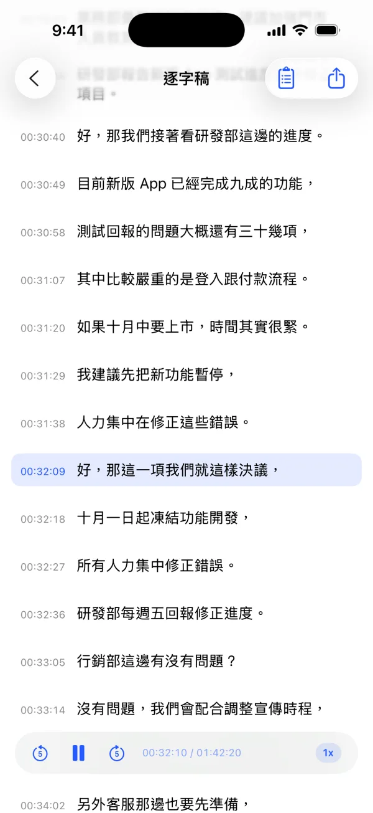
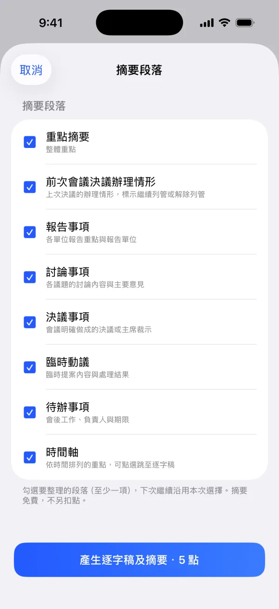
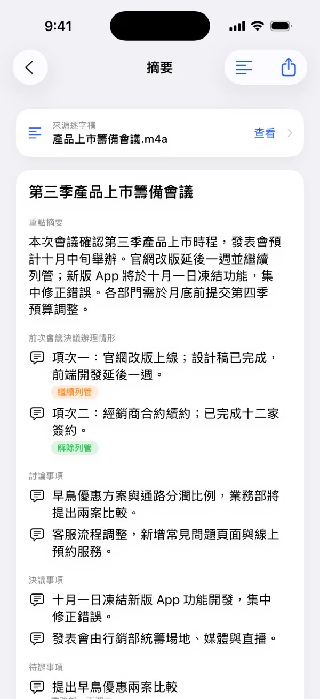
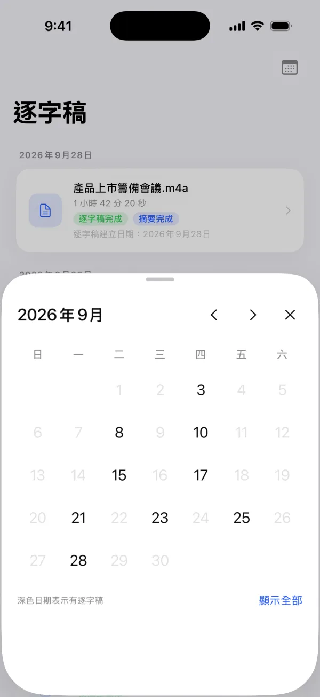

iPhone 與 iPad・已在 App Store 上架
錄音檔，
一鍵轉換逐字稿及摘要。
針對台灣國語與繁體中文優化，中英夾雜也能精準辨識。每一句都附時間戳記，會議摘要一併完成。
- 免註冊、免登入
- 新用戶 60 點試用
- 無月租
- 摘要不另扣點

使用方式
從錄音到摘要，三個步驟
-
選擇錄音檔
從「檔案」選取，或在「語音備忘錄」點選分享。支援 m4a、mp3、wav、aac、caf，單檔最長 5 小時。
-
勾選摘要段落
確認所需點數後，點選「產生逐字稿及摘要」，勾選想要的段落。選擇會保留供下次使用。
-
閱讀、核對、匯出
完成後直接打開摘要，可隨時切換回逐字稿，點選任一句重聽錄音，再匯出成需要的格式。

逐字稿
每一句，都能點回錄音
逐字稿每句都附時間戳記。對內容有疑問時，點一下那句話，錄音就從該處開始播放，不必來回拖曳進度條。
- 結合語音辨識與文字校對，整理日常對話與專業用語
- 可逐句修正，匯出時使用修正後的內容
- 加入「常用詞彙」，協助處理人名、單位與專有名詞


會議摘要
摘要一併完成，不另扣點
製作逐字稿時會自動產生條理清楚的會議摘要。開始前勾選需要的段落，摘要裡的時間軸可直接跳回逐字稿與對應的錄音位置。

歷史紀錄
依日期找回每一場會議
用月曆快速篩選特定日期的逐字稿，有內容的日期會清楚標示。逐字稿、摘要與錄音放在一起，隨時可以回頭查閱。
- 長按即可刪除單筆逐字稿、摘要與相關錄音
- iPhone 與 iPad 皆可使用
更多功能
整理會議紀錄需要的，都準備好了
TXT · MD · DOCX · PDF · SRT
多種匯出格式
逐字稿可匯出為純文字、Markdown、Word、PDF 或 SRT 字幕；摘要可匯出為純文字、Markdown、Word 或 PDF。
M4A · MP3 · WAV · AAC · CAF
常見音訊格式，最長 5 小時
長時間的會議、課程或訪談也能一次處理，不需要自己先分段。
語音備忘錄 → 分享
從語音備忘錄快速匯入
在「語音備忘錄」點選分享，選擇繁字逐字稿，回到 App 時錄音檔已經選好。
常用詞彙
教它認得你的專有名詞
先加入人名、組織、單位與專業用語，協助文字校對正確處理同音字。
逐句編輯
辨識結果可以修正
逐句檢查並修改文字，後續匯出會使用修正後的內容。
繁體中文 · English · 日本語
三種語言
可在「設定 › 語言」切換。語言同時決定錄音的辨識語言，校對與摘要也會使用對應語言。
計費方式
1 點處理 1 分鐘，用多少算多少
沒有月租或訂閱，只有製作逐字稿時才使用點數。只計完整分鐘，例如 10 分 40 秒的錄音扣 10 點，單檔最低 1 點。
- 符合資格的新用戶可獲得 60 點試用點數
- 會議摘要免費，不另扣點
- 處理失敗不扣點，或由系統自動退還
點數方案為 App 內購買的消耗型項目，實際售價以 App 內「點數」頁面顯示為準。試用點數每台裝置限領一次。
隱私與資料
不用帳號，資料由你決定去留
免註冊使用
不需要提供姓名、電子郵件或密碼。App 以匿名帳號保存點數與工作狀態。
先說明，再處理
語音辨識、文字校對與摘要由私密雲端服務處理。使用前會先顯示資料處理說明，並取得你的同意。
隨時可以刪除
可逐筆刪除逐字稿、摘要與錄音，也可在「設定」選擇「刪除帳號與所有資料」。
各服務接收的資料明細，請參閱隱私權政策。
常見問題
下載前想知道的事
逐字稿的準確度如何？
品質會受到原始錄音的清晰度、背景噪音、收音距離、說話音量及多人同時發言等因素影響；清楚且干擾較少的錄音通常能獲得較佳結果。產生的逐字稿與摘要仍可能包含錯誤，重要的姓名、數字、決議及待辦事項請與原始錄音核對。
點數不夠處理整段錄音怎麼辦？
App 會顯示還差幾點，並預先選好足夠的點數方案，購買後即可處理完整錄音。
處理失敗會扣點嗎？
不會。處理失敗不扣點，或由系統自動退還。摘要若產生失敗，可在摘要畫面免費重新產生。
點數可以移到另一台裝置嗎？
點數屬於 App 在這台裝置上建立的匿名帳號，無法假定可移轉至其他裝置。刪除帳號會一併移除剩餘點數，請勿為了排除餘額問題而刪除帳號。
需要網路連線嗎？
需要。製作逐字稿與摘要時須連上網路；完成後的內容可在 App 內查看與匯出。
遇到問題要找誰？
請參閱支援頁面，裡面有詳細的操作說明與聯絡方式。